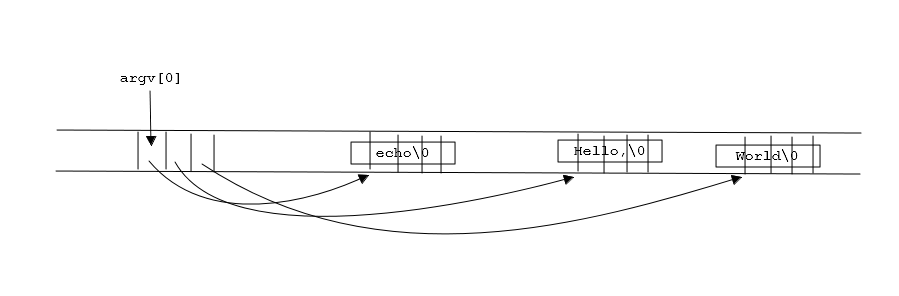
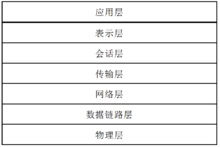
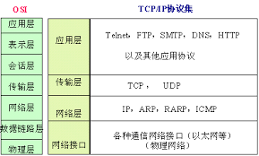
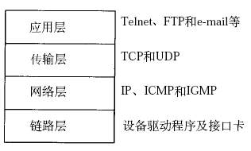
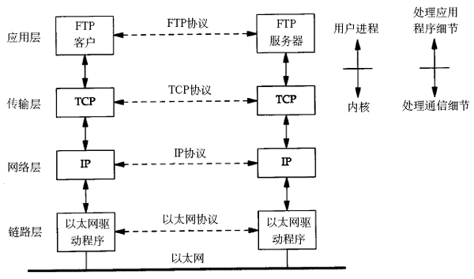
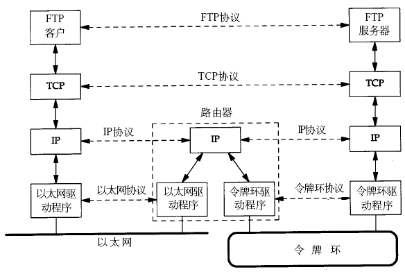

以软件工程思维来定制项目框架
问题分析
阐明将要解决的问题
服务器端:
接收客户端信息，如信息为“Query”，则打印“Receive Query”
客户端：
向地址127.0.0.1的服务器端顺序发送信息“Query test”，“Query”，“Query Quit”，然后退出。
题目中出现的ip地址可以根据实际情况定。
网络中进程之间如何通信？
本地进程间通信
- 本地进程标识
PID - 本地进程通信方式
本地的进程间通信（IPC）有很多种方式，但可以总结为下面4类:- 消息传递（管道、FIFO、消息队列）
- 同步（互斥量、条件变量、读写锁、文件和写记录锁、信号量）
- 共享内存（匿名的和具名的）
- 远程过程调用（Solaris门和Sun RPC)
网络进程间通信
- 网络进程标识
三元组(IP，协议，端口)
网络层的“ip地址”可以唯一标识网络中的主机，而传输层的“协议+端口”可以唯一标识主机中的应用程序（进程）。这样利用三元组（ip地址，协议，端口）就可以标识网络的进程了，网络中的进程通信就可以利用这个标志与其它进程进行交互。 - 网络进程通信方式
使用TCP/IP协议的应用程序通常采用应用编程接口(API)：UNIX BSD的套接字（socket）和UNIX System V的TLI（已经被淘汰），来实现网络进程之间的通信。就目前而言，几乎所有的应用程序都是采用socket，而现在又是网络时代，网络中进程通信是无处不在，这就是我[原作者]为什么说“一切皆socket”。
Socket与TCP是什么关系?
Socket是应用层与TCP/IP协议族通信的中间软件抽象层，它是一组接口。在设计模式中，Socket其实就是一个门面模式，它把复杂的TCP/IP协议族隐藏在Socket接口后面，对用户来说，一组简单的接口就是全部，让Socket去组织数据，以符合指定的协议。
Socket应用编程接口(API)
服务器端先初始化Socket，然后与端口绑定(bind)，对端口进行监听(listen)，调用accept阻塞，等待客户端连接。在这时如果有个客户端初始化一个Socket，然后连接服务器(connect)，如果连接成功，这时客户端与服务器端的连接就建立了。客户端发送数据请求，服务器端接收请求并处理请求，然后把回应数据发送给客户端，客户端读取数据，最后关闭连接，一次交互结束。
Socket中TCP的三次握手建立连接详解
tcp建立连接要进行“三次握手”，即交换三个分组。大致流程如下：
- 客户端向服务器发送一个SYN J
- 服务器向客户端响应一个SYN K，并对SYN J进行确认ACK J+1
客户端再想服务器发一个确认ACK K+1
这样就完了三次握手，但是这个三次握手发生在socket的那几个函数中呢？请看下图：

从图中可以看出，当客户端调用connect时，触发了连接请求，向服务器发送了SYN J包，这时connect进入阻塞状态；服务器监听到连接请求，即收到SYN J包，调用accept函数接收请求向客户端发送SYN K ，ACK J+1，这时accept进入阻塞状态；客户端收到服务器的SYN K ，ACK J+1之后，这时connect返回，并对SYN K进行确认；服务器收到ACK K+1时，accept返回，至此三次握手完毕，连接建立。总结：客户端的connect在三次握手的第二个次返回，而服务器端的accept在三次握手的第三次返回。
Socket中TCP的四次握手释放连接详解

图示过程如下：
- 某个应用进程首先调用close主动关闭连接，这时TCP发送一个FIN M；
- 另一端接收到FIN M之后，执行被动关闭，对这个FIN进行确认。它的接收也作为文件结束符传递给应用进程，因为FIN的接收意味着应用进程在相应的连接上再也接收不到额外数据；
- 一段时间之后，接收到文件结束符的应用进程调用close关闭它的socket。这导致它的TCP也发送一个FIN N；
- 接收到这个FIN的源发送端TCP对它进行确认。
Socket中TCP的通讯流程
在学习socket API时要注意应用程序和TCP协议层是如何交互的：
- 应用程序调用某个socket函数时TCP协议层完成什么动作，比如调用connect()会发出SYN段
- 应用程序如何知道TCP协议层的状态变化，比如从某个阻塞的socket函数返回就表明TCP协议收到了某些段，再比如read()返回0就表明收到了FIN段
下图是基于TCP协议的客户端/服务器程序的一般流程：
建立连接
服务器调用socket()、bind()、listen()完成初始化后，调用accept()阻塞等待，处于监听端口的状态，客户端调用socket()初始化后，调用connect()发出SYN段并阻塞等待服务器应答，服务器应答一个SYN-ACK段，客户端收到后从connect()返回，同时应答一个ACK段，服务器收到后从accept()返回。
传输数据
建立连接后，TCP协议提供全双工的通信服务，但是一般的客户端/服务器程序的流程是由客户端主动发起请求，服务器被动处理请求，一问一答的方式。因此，服务器从accept()返回后立刻调用read()，读socket就像读管道一样，如果没有数据到达就阻塞等待，这时客户端调用write()发送请求给服务器，服务器收到后从read()返回，对客户端的请求进行处理，在此期间客户端调用read()阻塞等待服务器的应答，服务器调用write()将处理结果发回给客户端，再次调用read()阻塞等待下一条请求，客户端收到后从read()返回，发送下一条请求，如此循环下去。
断开连接
如果客户端没有更多的请求了，就调用close()关闭连接，就像写端关闭的管道一样，服务器的read()返回0，这样服务器就知道客户端关闭了连接，也调用close()关闭连接。注意，任何一方调用close()后，连接的两个传输方向都关闭，不能再发送数据了。如果一方调用shutdown()则连接处于半关闭状态，仍可接收对方发来的数据。
程序设计
设计解决问题需要的接口
socket接口
socket()
int socket(int domain, int type, int protocol);
- 功能描述
socket函数对应于普通文件的打开操作。普通文件的打开操作返回一个文件描述字，而socket()用于创建一个socket描述符（socket descriptor），它唯一标识一个socket。这个socket描述字跟文件描述字一样，后续的操作都有用到它，把它作为参数，通过它来进行一些读写操作。 参数描述
正如可以给fopen的传入不同参数值，以打开不同的文件。创建socket的时候，也可以指定不同的参数创建不同的socket描述符，socket函数的三个参数分别为：- domain
即协议域，又称为协议族（family）。常用的协议族有，AF_INET、AF_INET6、AF_LOCAL（或称AF_UNIX，Unix域socket）、AF_ROUTE等等。协议族决定了socket的地址类型，IPv4、IPv6和UNIX Domain Socket的地址类型分别定义为常数AF_INET、AF_INET6、AF_UNIX。
在通信中必须采用对应的地址，如AF_INET决定了要用ipv4地址（32位的）与端口号（16位的）的组合、AF_UNIX决定了要用一个绝对路径名作为地址。 type
指定socket类型。常用的socket类型有，SOCK_STREAM、SOCK_DGRAM、SOCK_RAW、SOCK_SEQPACKET等等。- SOCK_STREAM
流套接字（SOCK_STREAM）：流套接字用于提供面向连接、可靠的数据传输服务。该服务将保证数据能够实现无差错、无重复发送，并按顺序接收。流套接字之所以能够实现可靠的数据服务，原因在于其使用了传输控制协议，即TCP（The Transmission Control Protocol）协议。 - SOCK_DGRAM
数据报套接字（SOCK_DGRAM）：数据报套接字提供了一种无连接的服务。该服务并不能保证数据传输的可靠性，数据有可能在传输过程中丢失或出现数据重复，且无法保证顺序地接收到数据。数据报套接字使用UDP（User Datagram Protocol）协议进行数据的传输。由于数据包套接字不能保证数据传输的可靠性，对于有可能出现的数据丢失情况，需要在程序中做相应的处理。 - SOCK_RAW
原始套接字(SOCK_RAW)：原始套接字与标准套接字（标准套接字指的是前面介绍的流套接字和数据报套接字）的区别在于：原始套接字可以读写内核没有处理的IP数据包，而流套接字只能读取TCP协议的数据，数据报套接字只能读取UDP协议的数据。因此，如果要访问其他协议发送数据必须使用原始套接字。
这个socket类型提供单一的网络访问，使用ICMP公共协议。（ping、traceroute使用该协议） - SOCK_SEQPACKET
这个协议是双线路的、可靠的连接，发送固定长度的数据包进行传输。必须把这个包完整的接受才能进行读取。
- SOCK_STREAM
protocol
故名思义，就是指定协议。常用的协议有，IPPROTO_TCP、IPPTOTO_UDP、IPPROTO_SCTP、IPPROTO_TIPC等，它们分别对应TCP传输协议、UDP传输协议、STCP传输协议、TIPC传输协议。
注意： 并不是上面的type和protocol可以随意组合的，如SOCK_STREAM不可以跟IPPROTO_UDP组合。当protocol为0时，会自动选择type类型对应的默认协议。
- domain
返回值描述
如果发生错误，函数返回值为-1。 否则，函数会返回一个代表新分配的描述符的整数。
当我们调用socket创建一个socket时，返回的是监听socket描述字，它存在于协议族（address family，AF_XXX）空间中，但没有一个具体的地址。如果想要给它赋值一个地址，就必须调用bind()函数，否则就当调用connect()、listen()时系统会自动随机分配一个端口。
bind()
int bind(int sockfd, const struct sockaddr *addr, socklen_t addrlen);
- 功能描述
bind()函数把一个地址族中的特定地址赋给socket。例如对应AF_INET、AF_INET6就是把一个ipv4或ipv6地址和端口号组合赋给socket。 - 参数描述
- sockfd
即socket描述字，它是通过socket()函数创建了，唯一标识一个socket。bind()函数就是给这个描述字绑定一个名字。 - addr
一个const struct sockaddr *指针，指向要绑定给sockfd的协议地址。这个地址结构根据地址创建socket时的地址协议族的不同而不同。 - addrlen
对应的是地址的长度。
通常服务器在启动的时候都会绑定一个众所周知的地址（如ip地址+端口号），用于提供服务，客户就可以通过它来接连服务器；而客户端就不用指定，有系统自动分配一个端口号和自身的ip地址组合。这就是为什么通常服务器端在listen之前会调用bind()，而客户端就不会调用，而是在connect()时由系统随机生成一个。
- sockfd
- 返回值描述
如果发生错误，函数返回值为-1，否则为0。
listen()、connect()
int listen(int sockfd, int backlog);int connect(int sockfd, const struct sockaddr *addr, socklen_t addrlen);
- 功能描述
如果作为一个服务器，在调用socket()、bind()之后就会调用listen()来监听这个socket，如果客户端这时调用connect()发出连接请求，服务器端就会接收到这个请求。 - 参数描述
- listen函数
第一个参数即为要监听的socket描述字，第二个参数为相应socket可以排队的最大连接个数。 - connect函数
第一个参数即为客户端的socket描述字，第二参数为服务器的socket地址，第三个参数为socket地址的长度。
- listen函数
- 返回值描述
返回-1表示出错，0表示成功
socket()函数创建的socket默认是一个主动类型的，listen函数将socket变为被动类型的，等待客户的连接请求。
accept()
int accept(int sockfd, struct sockaddr *addr, socklen_t *addrlen);
- 功能描述
TCP服务器端依次调用socket()、bind()、listen()之后，就会监听指定的socket地址了。TCP客户端依次调用socket()、connect()之后就想TCP服务器发送了一个连接请求。TCP服务器监听到这个请求之后，就会调用accept()函数取接收请求，这样连接就建立好了。之后就可以开始网络I/O操作了，即类同于普通文件的读写I/O操作。 - 参数描述
accept函数的第一个参数为服务器的socket描述字，第二个参数为指向struct sockaddr *的指针，用于返回客户端的协议地址，第三个参数为协议地址的长度。 - 返回值描述
返回新的套接字描述符，称为连接socket描述字；出错返回-1。进一步的通信必须通过这个套接字。
如果accpet成功，那么其返回值是由内核自动生成的一个全新的描述字，代表与返回客户的TCP连接。accept函数返回的是已连接的socket描述字；而accept的第一个参数为服务器的socket描述字，是服务器开始调用socket()函数生成的，称为监听socket描述字。而一个服务器通常通常仅仅只创建一个监听socket描述字，它在该服务器的生命周期内一直存在。内核为每个由服务器进程接受的客户连接创建了一个已连接socket描述字，当服务器完成了对某个客户的服务，相应的已连接socket描述字就被关闭。
read()、write()
至此服务器与客户已经建立好连接了。可以调用网络I/O进行读写操作了，即实现了网咯中不同进程之间的通信！#include <unistd.h>ssize_t read(int fd, void *buf, size_t count);ssize_t write(int fd, const void *buf, size_t count);
- 描述：
- read函数
负责从fd中读取内容.当读成功时，read返回实际所读的字节数，如果返回的值是0表示已经读到文件的结束了，小于0表示出现了错误。如果错误为EINTR说明读是由中断引起的，如果是ECONNREST表示网络连接出了问题。 - write函数
将buf中的nbytes字节内容写入文件描述符fd.成功时返回写的字节数。失败时返回-1，并设置errno变量。 在网络程序中，当我们向套接字文件描述符写时有俩种可能。1)write的返回值大于0，表示写了部分或者是全部的数据。2)返回的值小于0，此时出现了错误。我们要根据错误类型来处理。如果错误为EINTR表示在写的时候出现了中断错误。如果为EPIPE表示网络连接出现了问题(对方已经关闭了连接)。
- read函数
close()
在服务器与客户端建立连接之后，会进行一些读写操作，完成了读写操作就要关闭相应的socket描述字，好比操作完打开的文件要调用fclose关闭打开的文件。#include <unistd.h>int close(int fd);
- 描述
close一个TCP socket的缺省行为时把该socket标记为以关闭，然后立即返回到调用进程。该描述字不能再由调用进程使用，也就是说不能再作为read或write的第一个参数。
注意：close操作只是使相应socket描述字的引用计数-1，只有当引用计数为0的时候，才会触发TCP客户端向服务器发送终止连接请求。
自定义接口
…
…
…
程序实现
实现非现成的接口
源文件托管在https://github.com/gitforhzc/basic_socket_c
服务器端
1 | // file: server.c |
客户端
1 | // file: client.c |
程序测试
测试接口并提供测试用例
编译
1 | // file: Makefile |
执行make
运行
开启服务./server
连接服务器./client 127.0.0.1
测试用例
IP
本机地址、局域网IP地址测试成功；
限于没有公网IP，广域网IP地址并未测试
发送信息
- 信息长度
#define MAXLINE 4096
由此可设定 - 信息支持的字符
char buff[MAXLINE];
任何可用char表示的值
程序维护
修改以前阶段的成果并改进
实现简单的即时聊天工具服务端及客户端：服务端与客户端互相发送消息
pthread
预备知识
如果读代码有障碍，可来此学习基础知识
C语言
命令行参数
在调用C语言程序时，可以将命令行参数传递给主函数main。main(int argc,char *argv[])
主函数main有两个参数：1.argc(参数数目) 2.argv(一个指向字符串数组的指针)
例:linux命令echo.在linux命令行输入1
2
3➜ ~ echo Hello, World
Hello, World
➜ ~

命令行各参数用空格隔开，按照C语言约定，argv[0]为程序名.argv[1]……argv[argc-1]为可选参数.
错误报告
指示错误代号errno
1 | #include <errno.h> |
errno.h中的C标准库的头文件中定义的整数变量errno，這是由系统调用和一些库函数的错误事件指明什麼地方出了错。该宏展开为int类型的修改的左值，因此它可以同時读取和修改程序。
errno設置為零，在程序启动时，标准C库中的某些功能修改它的值到一些异于零值，某些类型的错误信号。您还可以修改它的值，或在方便時归零。
描述错误信息strerror()
1 | #include <string.h> |
strerror函数把其中一个错误代码作为参数，并返回一个指向用于描述错误的字符串的指针。
自定义错误信息perror()
1 | #include <stdio.h> |
如果message不是NULL并且指向一个非空的字符串，perror函数就打印出这个字符串，用于解释errno当前错误代码的信息。
字节序
多字节数据高低字节的存储顺序
主机字节序
主机字节序就是我们平常说的大端和小端模式：不同的CPU有不同的字节序类型，这些字节序是指多字节数据在内存中保存的顺序，这个叫做主机序。引用标准的Big-Endian和Little-Endian的定义如下：
- Little-Endian
低位字节排放在内存的低地址端，高位字节排放在内存的高地址端。 - Big-Endian
高位字节排放在内存的低地址端，低位字节排放在内存的高地址端。
网络字节序
我们已经知道，内存中的多字节数据相对于内存地址有大端和小端之分，网络数据流同样有大端小端之分，那么如何定义网络数据流的地址呢？
- 发送主机通常将发送缓冲区中的数据按内存地址从低到高的顺序发出
- 接收主机把从网络上接到的字节依次保存在接收缓冲区中，也是按内存地址从低到高的顺序保存
因此，网络数据流的地址应这样规定：先发出的数据是低地址，后发出的数据是高地址。
TCP/IP协议规定，网络数据流应采用大端字节序，即低地址高字节。
例如，地址0-1是16位的源端口号，如果这个端口号是1000（0x3e8），则地址0是0x03，地址1是0xe8，也就是先发0x03，再发0xe8，这16位在发送主机的缓冲区中也应该是低地址存0x03，高地址存0xe8。但是，如果发送主机是小端字节序的，这16位被解释成0xe803，而不是1000。因此，发送主机把1000填到发送缓冲区之前需要做字节序的转换。同样地，接收主机如果是小端字节序的，接到16位的源端口号也要做字节序的转换。如果主机是大端字节序的，发送和接收都不需要做转换。同理，32位的IP地址也要考虑网络字节序和主机字节序的问题。
主机字节序与网络字节序的转换
为使网络程序具有可移植性，使同样的C代码在大端和小端计算机上编译后都能正常运行，可以调用以下库函数做网络字节序和主机字节序的转换。1
2
3
4
5
6#include <arpa/inet.h>
uint32_t htonl(uint32_t hostlong);
uint16_t htons(uint16_t hostshort);
uint32_t ntohl(uint32_t netlong);
uint16_t ntohs(uint16_t netshort);
这些函数名很好记，h表示host，n表示network，l表示32位长整数，s表示16位短整数。
例如htonl表示将32位的长整数从主机字节序转换为网络字节序。
- 如果主机是小端字节序，这些函数将参数做相应的大小端转换然后返回
- 如果主机是大端字节序，这些函数不做转换，将参数原封不动地返回。
Socket地址的数据类型
Socket API是一层抽象的网络编程接口，适用于各种底层网络协议，如IPv4、IPv6以及UNIX Domain Socket。然而，各种网络协议的地址格式并不相同，各种Socket地址数据结构如下图所示：

netinet/in.h
IPv4和IPv6的地址格式定义在netinet/in.h中
IPv4地址用sockaddr_in结构体表示，包括16位地址类型,16位端口号和32位IP地址
IPv6地址用sockaddr_in6结构体表示，包括16位地址类型,16位端口号、128位IP地址和一些控制字段。1
2
3
4
5
6
7
8
9
10
11
12
13
14
15
16
17
18
19
20
21
22
23// file: netinet/in.h
// ipv4
struct sockaddr_in {
sa_family_t sin_family; /* address family: AF_INET */
in_port_t sin_port; /* port in network byte order */
struct in_addr sin_addr; /* internet address */
};
/* Internet address. */
struct in_addr {
uint32_t s_addr; /* address in network byte order */
};
// ipv6
struct sockaddr_in6 {
sa_family_t sin6_family; /* AF_INET6 */
in_port_t sin6_port; /* port number */
uint32_t sin6_flowinfo; /* IPv6 flow information */
struct in6_addr sin6_addr; /* IPv6 address */
uint32_t sin6_scope_id; /* Scope ID (new in 2.4) */
};
struct in6_addr {
unsigned char s6_addr[16]; /* IPv6 address */
};
sys/un.h
UNIX Domain Socket的地址格式定义在sys/un.h中，用sockaddr_un结构体表示。1
2
3
4
5
6// file: sys/un.h
#define UNIX_PATH_MAX 108
struct sockaddr_un {
sa_family_t sun_family; /* AF_UNIX */
char sun_path[UNIX_PATH_MAX]; /* pathname */
};
sys/socket.h
1 | // file: sys/socket.h |
以上各种socket地址结构体的开头都是相同的，前16位表示整个结构体的长度（并不是所有UNIX的实现都有长度字段，如Linux就没有），后16位表示地址类型。
IPv4、IPv6和UNIX Domain Socket的地址类型分别定义为常数AF_INET、AF_INET6、AF_UNIX。这样，只要取得某种sockaddr结构体的首地址，不需要知道具体是哪种类型的sockaddr结构体，就可以根据地址类型字段确定结构体中的内容。
因此，socket API可以接受各种类型的sockaddr结构体指针做参数，例如bind、accept、connect等函数，这些函数的参数应该设计成void *类型以便接受各种类型的指针，但是sock API的实现早于ANSI C标准化，那时还没有void *类型，因此这些函数的参数都用struct sockaddr *类型表示，在传递参数之前要强制类型转换一下，例如：1
2
3struct sockaddr_in servaddr;
/* initialize servaddr */
bind(listen_fd, (struct sockaddr *)&servaddr, sizeof(servaddr));
arpa/inet.h
本节只讨论基于IPv4的socket网络编程，sockaddr_in中的成员struct in_addr sin_addr表示32位的IP地址。但是我们通常用点分十进制的字符串表示IP地址，以下函数可以在字符串表示和in_addr表示之间转换。
字符串转in_addr的函数
1
2
3int inet_aton(const char *strptr, struct in_addr *addrptr);
in_addr_t inet_addr(const char *strptr);
int inet_pton(int family, const char *strptr, void *addrptr);in_addr转字符串的函数
1
2char *inet_ntoa(struct in_addr inaddr);
const char *inet_ntop(int family, const void *addrptr, char *strptr, size_t len);
计算机网络基础
OSI参考模型
开放式系统互联通信参考模型（英语：Open System Interconnection Reference Model，缩写为 OSI），简称为OSI模型（OSI model），一种概念模型，由国际标准化组织（ISO）提出，一个试图使各种计算机在世界范围内互连为网络的标准框架。定义于ISO/IEC 7498-1。这一参考模型共分为七层：物理层、数据链路层、网络层、传输层、会话层、表示层和应用层，如下图所示。

第1层 物理层(Physical Layer)
- 最底层是物理层，指的是电信号的传递方式，比如现在以太网通用的网线（双绞线）、早期以太网采用的的同轴电缆（现在主要用于有线电视）、光纤等都属于物理层的概念。物理层的能力决定了最大传输速率、传输距离、抗干扰性等。
- 集线器（Hub）、中继器是工作在物理层的网络设备，用于双绞线的连接和信号中继（将已衰减的信号再次放大使之传得更远）。
第2层 数据链路层(Data Link Layer)
- 链路层有以太网、令牌环网等标准，链路层负责网卡设备的驱动、帧同步（就是说从网线上检测到什么信号算作新帧的开始）、冲突检测（如果检测到冲突就自动重发）、数据差错校验等工作。
- 交换机是工作在链路层的网络设备，可以在不同的链路层网络之间转发数据帧（比如十兆以太网和百兆以太网之间、以太网和令牌环网之间），由于不同链路层的帧格式不同，交换机要将进来的数据包拆掉链路层首部重新封装之后再转发。
第3层 网络层(Network Layer)
- 网络层的IP协议是构成Internet的基础。Internet上的主机通过IP地址来标识，Internet上有大量路由器负责根据IP地址选择合适的路径转发数据包，数据包从Internet上的源主机到目的主机往往要经过十多个路由器。
- 路由器是工作在第三层的网络设备，同时兼有交换机的功能，可以在不同的链路层接口之间转发数据包，因此路由器需要将进来的数据包拆掉网络层和链路层两层首部并重新封装。IP协议不保证传输的可靠性，数据包在传输过程中可能丢失，可靠性可以在上层协议或应用程序中提供支持。
第4层 传输层(Transport Layer)
网络层负责点到点（point-to-point）的传输（这里的“点”指主机或路由器），而传输层负责端到端（end-to-end）的传输（这里的“端”指源主机和目的主机）。传输层可选择TCP或UDP协议。
- TCP是一种面向连接的、可靠的协议，有点像打电话，双方拿起电话互通身份之后就建立了连接，然后说话就行了，这边说的话那边保证听得到，并且是按说话的顺序听到的，说完话挂机断开连接。也就是说TCP传输的双方需要首先建立连接，之后由TCP协议保证数据收发的可靠性，丢失的数据包自动重发，上层应用程序收到的总是可靠的数据流，通讯之后关闭连接。
- UDP协议不面向连接，也不保证可靠性，有点像寄信，写好信放到邮筒里，既不能保证信件在邮递过程中不会丢失，也不能保证信件是按顺序寄到目的地的。使用UDP协议的应用程序需要自己完成丢包重发、消息排序等工作。
第5层 会话层(Session Layer)
负责在数据传输中设置和维护电脑网络中两台电脑之间的通信连接。
第6层 表示层(Presentation Layer)
把数据转换为能与接收者的系统格式兼容并适合传输的格式。
第7层 应用层(Application Layer)
提供为应用软件而设的界面，以设置与另一应用软件之间的通信。例如: HTTP，HTTPS，FTP，TELNET，SSH，SMTP，POP3等。
注意：OSI参考模型并没有提供一个可以实现的方法，而是描述了一些概念，用来协调进程间通信标准的制定。即OSI参考模型并不是一个标准，而是一个在制定标准时所使用的概念性框架。
TCP/IP参考模型(TCP/IP协议栈)
互联网协议族（英语：Internet Protocol Suite，缩写为IPS），是一个网络通信模型，以及一整个网络传输协议家族，为互联网的基础通信架构。因为这个协议家族的两个核心协议：TCP（传输控制协议）和IP（网际协议），是这个家族中最早通过的标准，它常被通称为TCP/IP协议族（英语：TCP/IP Protocol Suite，或TCP/IP Protocols），简称TCP/IP。由于在网络通讯协议普遍采用分层的结构，当多个层次的协议共同工作时，这些协议分布在参考模型的不同层中的，因此又被称为TCP/IP协议栈（英语：TCP/IP Protocol Stack）。
TCP/IP参考模型是一个抽象的分层模型，在这个模型中，所有的TCP/IP系列网络协议都被归类到4个抽象的”层”中，常被视为是简化的七层OSI模型。每一抽象层创建在低一层提供的服务上，并且为高一层提供服务。

TCP/IP协议栈的通讯过程
将以下所说的链路层视作网络接口层
TCP/IP网络协议栈分为应用层（Application）、传输层（Transport）、网络层（Network）和链路层（Link）四层。如下图所示（该图出自[TCPIP]）。

同一网段的通讯
两台计算机通过TCP/IP协议通讯的过程如下所示（该图出自[TCPIP]）。

传输层及其以下的机制由内核提供，将数据从一台计算机通过一定的路径发送到另一台计算机。应用层由用户进程提供（使用socket API编写应用程序），应用层数据通过协议栈发到网络上时，每层协议都要加上一个数据首部（header），称为封装（Encapsulation），如下图所示（该图出自[TCPIP]）。
不同的协议层对数据包有不同的称谓，在传输层叫做段（segment），在网络层叫做数据报（datagram），在链路层叫做帧（frame）。数据封装成帧后发到传输介质上，到达目的主机后每层协议再剥掉相应的首部，最后将应用层数据交给应用程序处理。
不同网段的通讯
上图对应两台计算机在同一网段中的情况，如果两台计算机在不同的网段中，那么数据从一台计算机到另一台计算机传输过程中要经过一个或多个路由器，如下图所示（该图出自[TCPIP]）。

目的主机收到数据包后，如何经过各层协议栈最后到达应用程序呢？整个过程如下图所示（该图出自[TCPIP]）。
- 以太网驱动程序首先根据以太网首部中的“上层协议”字段确定该数据帧的有效载荷（payload，指除去协议首部之外实际传输的数据）是IP、ARP还是RARP协议的数据报，然后交给相应的协议处理。
- 假如是IP数据报，IP协议再根据IP首部中的“上层协议”字段确定该数据报的有效载荷是TCP、UDP、ICMP还是IGMP，然后交给相应的协议处理。
- 假如是TCP段或UDP段，TCP或UDP协议再根据TCP首部或UDP首部的“端口号”字段确定应该将应用层数据交给哪个用户进程。IP地址是标识网络中不同主机的地址，而端口号就是同一台主机上标识不同进程的地址，IP地址和端口号合起来标识网络中唯一的进程。
注意，虽然IP、ARP和RARP数据报都需要以太网驱动程序来封装成帧，但是从功能上划分，ARP和RARP属于链路层，IP属于网络层。虽然ICMP、IGMP、TCP、UDP的数据都需要IP协议来封装成数据报，但是从功能上划分，ICMP、IGMP与IP同属于网络层，TCP和UDP属于传输层。本文对RARP、ICMP、IGMP协议不做进一步介绍，有兴趣的读者可以看参考资料。
文档参考
[1] [Linux Socket编程]：http://www.cnblogs.com/skynet/archive/2010/12/12/1903949.html
[2] [揭开Socket编程的面纱]： http://goodcandle.cnblogs.com/archive/2005/12/10/294652.aspx
[3] [第37章 socket编程]: https://akaedu.github.io/book/ch37s01.html
[4] [C语言]：https://freehuoshan.gitbooks.io/c-language/content/zs/command.html
引申
[1] UNIX环境高级编程 第二版
[2] UNIX网络编程卷1：套接字联网API（第3版）
[3] TCP-IP详解卷一：协议